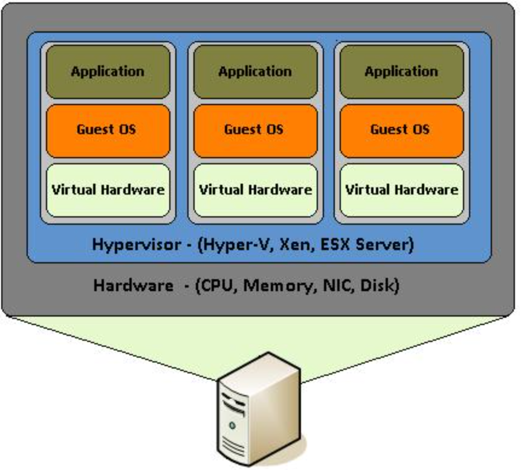

Virtualization provides for the existence of multiple, smaller virtual servers, within the framework of a larger server’s physical environment. The virtualization software which runs on the parent basically allocates resources to each virtual server along with its own operating system, drivers, binaries, libraries, and applications. These virtual servers are isolated from each other and have no knowledge they are running within a virtualized platform nor aware that they are sharing resources with the other virtual machines.
The software that is vital for virtualization is called a hypervisor. A hypervisor can be hardware, software, or firmware-based. Essentially, it is a virtual layer that separates the physical server from the virtual machines and allows for multiple guest operating systems to run side by side within that system. The hypervisor ensures that the VM’s have access to a defined amount of resources utilizing the main physical servers resources and that they remain separated and are portioned to each virtual machine as configured. VM’s can also update and modify the applications within their own space without affecting the applications on another virtual machine.